| 정답 |  | | |
| 0 | — | 실행 실패
KeyError: 'result' | 1 # 함수18 되돌림 실패: 낱말 · 숫자 꼴이 아닌 글자: <center>11 |
| 250 | — | 실행 실패
KeyError: 'result' | 1 # 함수18 되돌림 실패: 3 번째 줄은 <b3> 로 시작해야 함: <b2><Workplane><XY><box> 17.1 17.1 1.2<y |
| 500 | 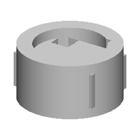 | IoU 0.42 | 1 b0 = place(cq.Workplane("XZ").polyline([(0.0, 0.0), (28.6, 0.0), (28.6, 31.0), (20.0, 31.0), (20.0, 10.6), (0.0, 10.6)]).close().revolve(360, (0, 0, 0), (0, 1, 0)).faces(">Z").workplane(origin=(0, 0, 31.0)).center(10.5, 10.6).rect(10.7, 10.6).cutBlind(-10.7).faces(">Z").workplane(origin=(0, 0, 31.0)).center(-1.5, 10.6).rect(10.7, 10.6).cutBlind(-10.4), "z", (19.3, 18.7, 0.0))
2 b1 = place(cq.Workplane("XY").box(50.8, 32.0, 19.6, centered=(True, True, False)).faces(">Z").workplane(origin=(0, 0, 19.6)).center(-10.7, 10.6).hole(10.4, 10.6).faces(">Z").workplane(origin=(0, 0, 19.6)).center(-10.7, 10.6).rect(10.7, 10.6).cutBlind(-10.4), "z", (19.3, 18.7, 0.0))
3 b2 = place(cq.Workplane("XY").circle(17.0).extrude(17.3).faces(">Z").workplane(origin=(0, 0, 17.3)).center(-10.7, 10.6).hole(10.4, 10.6), "z", (19.3, 18.7, 0.0))
4 result = b0.union(b1.union(b2)) |
| 750 | 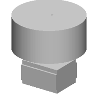 | IoU 0.32 | 1 b0 = place(cq.Workplane("XY").circle(29.0).extrude(27.9).faces(">Z").workplane(origin=(0, 0, 27.9)).center(1.8, 1.6).hole(1.3, 1.6).faces(">Z").workplane(origin=(0, 0, 27.9)).center(1.8, 1.6).rect(1.2, 1.6).cutBlind(-1.8), "z", (0.0, 0.0, 10.5))
2 b1 = place(cq.Workplane("XY").box(32.8, 28.0, 13.0, centered=(True, True, False)).faces(">Z").workplane(origin=(0, 0, 13.0)).center(1.8, 1.6).hole(1.3, 1.6).faces(">Z").workplane(origin=(0, 0, 13.0)).center(1.8, 1.6).hole(1.3), "z", (0.0, 0.0, -23.2))
3 b2 = place(cq.Workplane("XY").box(32.8, 25.0, 19.8, centered=(True, True, False)).faces(">Z").workplane(origin=(0, 0, 19.8)).center(1.8, 1.6).hole(1.3, 1.6), "z", (0.0, 0.0, -23.2))
4 result = b0.union(b1.union(b2)) |
| 1000 | 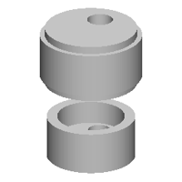 | IoU 0.30 | 1 b0 = place(cq.Workplane("XZ").polyline([(0.0, 0.0), (26.6, 0.0), (26.6, 23.0), (18.6, 23.0), (18.6, 10.6), (0.0, 10.6)]).close().revolve(360, (0, 0, 0), (0, 1, 0)).faces(">Z").workplane(origin=(0, 0, 23.0)).center(-1.8, -10.6).hole(11.3).faces(">Z").workplane(origin=(0, 0, 23.0)).center(1.8, 10.5).hole(11.3), "z", (0.0, 0.0, 23.0))
2 b1 = place(cq.Workplane("XZ").polyline([(0.0, 0.0), (23.0, 0.0), (23.0, 22.0), (17.5, 22.0), (17.5, 10.0), (0.0, 10.0)]).close().revolve(360, (0, 0, 0), (0, 1, 0)).faces(">Z").workplane(origin=(0, 0, 22.0)).center(-1.8, 10.0).hole(11.4), "z", (0.0, 0.0, -23.2))
3 b2 = place(cq.Workplane("XY").circle(24.0).extrude(30.9).faces(">Z").workplane(origin=(0, 0, 30.9)).center(-1.8, 10.8).hole(13.3), "z", (0.0, 0.0, 23.0))
4 result = b0.union(b1.union(b2)) |
| 1250 | 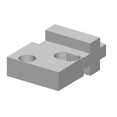 | IoU 0.66 | 1 b0 = place(cq.Workplane("XY").box(50.8, 35.5, 16.8, centered=(True, True, False)).faces(">Z").workplane(origin=(0, 0, 16.8)).center(17.5, 11.1).hole(15.1, 10.5).faces(">Z").workplane(origin=(0, 0, 16.8)).center(10.5, 10.5).hole(15.1, 10.5).faces(">Z").workplane(origin=(0, 0, 16.8)).center(-10.5, -10.5).hole(14.1, 8.5), "z", (-19.2, -19.2, -1.0))
2 b1 = place(cq.Workplane("XY").box(44.4, 28.9, 13.8, centered=(True, True, False)).faces(">Z").workplane(origin=(0, 0, 13.8)).center(-10.5, 10.5).hole(11.4, 10.4), "y", (-19.2, 19.2, -1.0))
3 b2 = place(cq.Workplane("XY").box(32.9, 32.9, 10.8, centered=(True, True, False)).faces(">Z").workplane(origin=(0, 0, 10.8)).center(-10.5, -1.8).rect(10.5, 6.8).cutBlind(-7.8).faces(">Z").workplane(origin=(0, 0, 10.8)).center(-10.5, 1.5).hole(10.4, 6.8), "z", (-19.2, 19.2, -1.0))
4 b3 = place(cq.Workplane("XY").box(44.4, 31.2, 10.5, centered=(True, True, False)).faces(">Z").workplane(origin=(0, 0, 10.5)).center(-10.5, -6.7).hole(10.4, 6.8).faces(">Z").workplane(origin=(0, 0, 10.5)).center(-10.5, -1.8).hole(10.4, 6.7), "z", (-19.2, 19.2, -1.0))
5 result = b0.union(b1.union(b2.union(b3))) |
| 1500 | 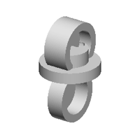 | IoU 0.41 | 1 b0 = place(cq.Workplane("XZ").polyline([(0.0, 0.0), (26.6, 0.0), (26.6, 10.0), (16.0, 10.0), (16.0, 22.0), (0.0, 22.0)]).close().revolve(360, (0, 0, 0), (0, 1, 0)).faces(">Z").workplane(origin=(0, 0, 22.0)).center(-1.1, 10.0).hole(11.1, 10.0).faces(">Z").workplane(origin=(0, 0, 22.0)).center(1.9, 10.0).hole(11.2, 10.0), "z", (0.0, 0.0, 10.0))
2 b1 = place(cq.Workplane("XZ").polyline([(0.0, 0.0), (23.0, 0.0), (23.0, 15.0), (16.0, 15.0), (16.0, 2.0), (0.0, 2.0)]).close().revolve(360, (0, 0, 0), (0, 1, 0)).faces(">Z").workplane(origin=(0, 0, 15.0)).center(-1.2, -1.9).hole(10.0, 7.3), "x", (0.0, 0.0, -23.2))
3 b2 = place(cq.Workplane("XZ").polyline([(0.0, 0.0), (23.0, 0.0), (23.0, 22.0), (16.0, 22.0), (16.0, 10.0), (0.0, 10.0)]).close().revolve(360, (0, 0, 0), (0, 1, 0)).faces(">Z").workplane(origin=(0, 0, 22.0)).center(-1.2, 10.0).hole(11.0, 10.0), "x", (0.0, 0.0, 23.2))
4 result = b0.union(b1.union(b2)) |
| 1750 | 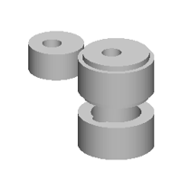 | IoU 0.36 | 1 b0 = place(cq.Workplane("XZ").polyline([(0.0, 0.0), (20.5, 0.0), (20.5, 18.9), (13.5, 18.9), (13.5, 3.9), (0.0, 3.9)]).close().revolve(360, (0, 0, 0), (0, 1, 0)).faces(">Z").workplane(origin=(0, 0, 18.9)).center(-1.5, -10.6).hole(10.5, 7.5), "z", (19.5, 0.0, 13.0))
2 b1 = place(cq.Workplane("XZ").polyline([(0.0, 0.0), (20.5, 0.0), (20.5, 18.9), (13.5, 18.9), (13.5, 3.9), (0.0, 3.9)]).close().revolve(360, (0, 0, 0), (0, 1, 0)).faces(">Z").workplane(origin=(0, 0, 18.9)).center(-1.4, -10.7).hole(10.5, 7.3), "z", (19.5, 0.0, -19.1))
3 b2 = place(cq.Workplane("XY").circle(17.9).extrude(25.0).faces(">Z").workplane(origin=(0, 0, 25.0)).center(-1.8, -1.6).hole(10.5, 11.5), "z", (19.5, 0.0, 13.0))
4 b3 = place(cq.Workplane("XY").circle(14.9).extrude(15.2).faces(">Z").workplane(origin=(0, 0, 15.2)).center(-1.5, -1.9).hole(10.5, 7.3), "z", (-19.5, 0.0, 13.0))
5 result = b0.union(b1.union(b2.union(b3))) |
| 2000 | 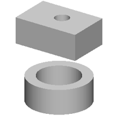 | IoU 0.24 | 1 b0 = place(cq.Workplane("XZ").polyline([(0.0, 0.0), (23.8, 0.0), (23.8, 18.8), (16.0, 18.8), (16.0, 3.9), (0.0, 3.9)]).close().revolve(360, (0, 0, 0), (0, 1, 0)).faces(">Z").workplane(origin=(0, 0, 18.8)).center(-1.0, 1.6).hole(10.4, 10.5).faces(">Z").workplane(origin=(0, 0, 18.8)).center(-1.5, 1.0).hole(10.4, 10.5), "z", (0.0, 0.0, -19.6))
2 b1 = place(cq.Workplane("XY").box(50.0, 32.9, 19.8, centered=(True, True, False)).faces(">Z").workplane(origin=(0, 0, 19.8)).center(1.9, 1.6).hole(10.4, 10.0).faces(">Z").workplane(origin=(0, 0, 19.8)).center(1.5, 1.0).hole(10.4, 10.0), "z", (0.0, 0.0, 23.6))
3 result = b0.union(b1) |
| 2250 | 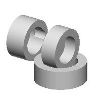 | IoU 0.41 | 1 b0 = place(cq.Workplane("XZ").polyline([(0.0, 0.0), (25.6, 0.0), (25.6, 18.9), (16.9, 18.9), (16.9, 3.9), (0.0, 3.9)]).close().revolve(360, (0, 0, 0), (0, 1, 0)).faces(">Z").workplane(origin=(0, 0, 18.9)).center(-1.1, -1.6).hole(11.4, 11.3).faces(">Z").workplane(origin=(0, 0, 18.9)).center(1.5, 1.9).hole(11.4, 10.5), "z", (19.5, 0.0, 0.0))
2 b1 = place(cq.Workplane("XZ").polyline([(0.0, 0.0), (20.8, 0.0), (20.8, 15.9), (13.8, 15.9), (13.8, 3.9), (0.0, 3.9)]).close().revolve(360, (0, 0, 0), (0, 1, 0)).faces(">Z").workplane(origin=(0, 0, 15.9)).center(-1.5, 1.0).hole(10.5, 10.0), "x", (19.5, 0.0, 23.0))
3 b2 = place(cq.Workplane("XZ").polyline([(0.0, 0.0), (20.5, 0.0), (20.5, 19.9), (13.9, 19.9), (13.9, 3.9), (0.0, 3.9)]).close().revolve(360, (0, 0, 0), (0, 1, 0)).faces(">Z").workplane(origin=(0, 0, 19.9)).center(-1.2, 10.5).hole(11.2, 11.4), "x", (-19.5, 0.0, 23.0))
4 result = b0.union(b1.union(b2)) |
| 2500 | 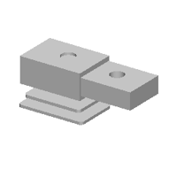 | IoU 0.60 | 1 b0 = place(cq.Workplane("XY").box(48.6, 31.9, 13.1, centered=(True, True, False)).faces(">Z").workplane(origin=(0, 0, 13.1)).center(1.6, 1.6).hole(10.4, 7.3).faces(">Z").workplane(origin=(0, 0, 13.1)).center(1.5, 1.9).hole(10.4, 5.5), "z", (19.5, 0.0, 16.0))
2 b1 = place(cq.Workplane("XY").box(47.6, 33.9, 19.8, centered=(True, True, False)).faces(">Z").workplane(origin=(0, 0, 19.8)).center(1.9, 1.6).hole(10.4, 10.5).faces(">Z").workplane(origin=(0, 0, 19.8)).center(1.5, 1.0).hole(10.0, 10.5), "z", (-19.5, 0.0, 16.0))
3 b2 = place(cq.Workplane("XY").box(50.9, 33.9, 2.1, centered=(True, True, False)).faces(">Z").workplane(origin=(0, 0, 2.1)).center(-1.8, -1.9).hole(10.0, 0.5).edges("|Z").fillet(2.6), "z", (-19.5, 0.0, -10.0))
4 b3 = place(cq.Workplane("XY").box(44.2, 29.9, 2.2, centered=(True, True, False)).faces(">Z").workplane(origin=(0, 0, 2.2)).center(-1.8, 1.0).hole(1.0, 0.5).edges("|Z").fillet(2.6), "z", (-19.5, 0.0, -2.9))
5 b4 = place(cq.Workplane("XY").box(44.2, 29.9, 2.0, centered=(True, True, False)).faces(">Z").workplane(origin=(0, 0, 2.0)).center(-1.9, -1.9).hole(1.0, 0.5).edges("|Z").fillet(2.0), "z", (-19.5, 0.0, 23.0))
6 result = b0.union(b1.union(b2.union(b3.union(b4)))) |
| 2750 | 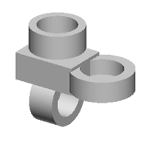 | IoU 0.47 | 1 b0 = place(cq.Workplane("XZ").polyline([(0.0, 0.0), (23.8, 0.0), (23.8, 15.9), (15.8, 15.9), (15.8, 3.9), (0.0, 3.9)]).close().revolve(360, (0, 0, 0), (0, 1, 0)).faces(">Z").workplane(origin=(0, 0, 15.9)).center(-1.1, -1.3).hole(10.8, 8.3).faces(">Z").workplane(origin=(0, 0, 15.9)).center(1.5, 1.0).hole(10.5, 8.3), "z", (19.5, 0.0, 0.0))
2 b1 = place(cq.Workplane("XY").box(48.6, 35.2, 21.0, centered=(True, True, False)).faces(">Z").workplane(origin=(0, 0, 21.0)).center(-1.4, -1.0).hole(10.5, 10.5).faces(">Z").workplane(origin=(0, 0, 21.0)).center(-1.2, -1.0).hole(10.5, 10.5), "z", (-19.5, 0.0, 0.0))
3 b2 = place(cq.Workplane("XZ").polyline([(0.0, 0.0), (20.8, 0.0), (20.8, 19.9), (13.8, 19.9), (13.8, 3.9), (0.0, 3.9)]).close().revolve(360, (0, 0, 0), (0, 1, 0)).faces(">Z").workplane(origin=(0, 0, 19.9)).center(-1.2, -1.9).hole(10.5, 11.5), "x", (-19.5, 0.0, -23.1))
4 b3 = place(cq.Workplane("XZ").polyline([(0.0, 0.0), (20.5, 0.0), (20.5, 18.0), (14.8, 18.0), (14.8, 3.9), (0.0, 3.9)]).close().revolve(360, (0, 0, 0), (0, 1, 0)).faces(">Z").workplane(origin=(0, 0, 18.0)).center(-1.2, -1.3).hole(10.6, 10.6), "z", (-19.5, 0.0, 23.1))
5 result = b0.union(b1.union(b2.union(b3))) |
| 3000 | 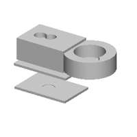 | IoU 0.58 | 1 b0 = place(cq.Workplane("XZ").polyline([(0.0, 0.0), (22.2, 0.0), (22.2, 15.5), (13.5, 15.5), (13.5, 3.9), (0.0, 3.9)]).close().revolve(360, (0, 0, 0), (0, 1, 0)).faces(">Z").workplane(origin=(0, 0, 15.5)).center(-1.0, -1.6).hole(10.8, 8.3).faces(">Z").workplane(origin=(0, 0, 15.5)).center(10.5, -10.6).hole(11.5, 8.3), "z", (19.5, 0.0, 13.0))
2 b1 = place(cq.Workplane("XY").box(47.2, 33.3, 19.8, centered=(True, True, False)).faces(">Z").workplane(origin=(0, 0, 19.8)).center(-10.6, -1.0).hole(10.5, 10.5).faces(">Z").workplane(origin=(0, 0, 19.8)).center(-1.5, 1.0).hole(10.0, 10.5), "z", (-19.5, 0.0, 13.0))
3 b2 = place(cq.Workplane("XY").box(50.9, 33.9, 2.1, centered=(True, True, False)).faces(">Z").workplane(origin=(0, 0, 2.1)).center(-1.8, -1.6).hole(10.0, 0.5).faces(">Z").workplane(origin=(0, 0, 2.1)).center(-1.5, -1.9).hole(10.6, 0.5), "z", (-19.5, 0.0, -23.1))
4 b3 = place(cq.Workplane("XY").box(52.9, 33.9, 2.1, centered=(True, True, False)).faces(">Z").workplane(origin=(0, 0, 2.1)).center(-10.7, -1.0).hole(10.0, 0.5).faces(">Z").workplane(origin=(0, 0, 2.1)).center(10.6, -1.6).hole(10.6, 0.5), "z", (-19.5, 0.0, -1.9))
5 result = b0.union(b1.union(b2.union(b3))) |